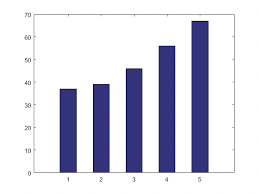
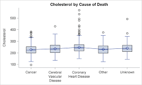
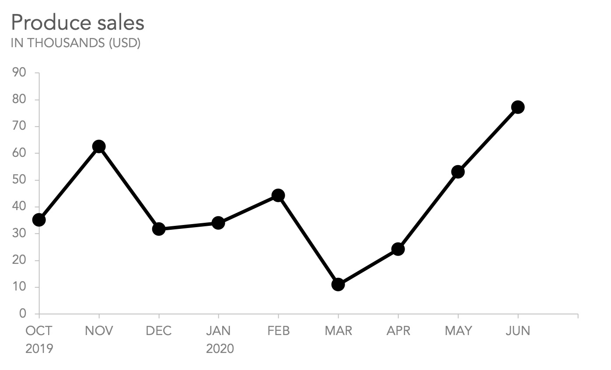

This query gives a visual comparison of how critics rated a movie in comparison to that of the consumer. This will be done in a yearly fashion, where the end user can select the span of years to view. The citics will include the critical review scores from Rotten Tomatoes, MetaCritic, and IMDB. The Consumer reviews will include those completed by reviewers on Rotten Tomatoes, MetaCritic, and IMDB.
This query aims to highlight the commercial success of academy award winning films with that of non-awarded films. This visualization can be done across multiple years that will be highlighted in a line graph, while when selecting a single year a box plot would easily be able to populate the information clearly for the end user.
This query aims to give a simple comprehensive view to the end user that allows for a quick look back at a year's most enjoyed films based on user reviews.
This query aims to give the end user an overview of how well genres did over a selected year.
This query aims to distinguish the success of Foreign films in comparison to that of Domestic films within a distinguished year. This will combine the overall consumer and critic review of all films to get a consensus of how well either foreign or international films were perceived in a year
